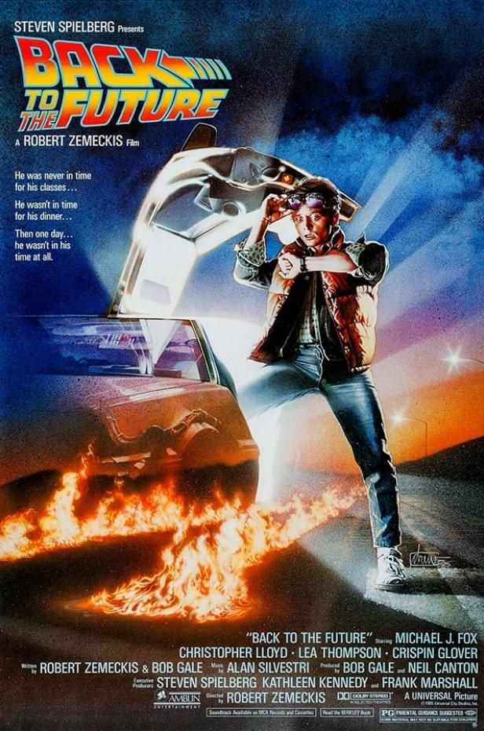

"De Volta para o Futuro é uma jornada inesquecível e emocionante que todo mundo precisa assistir pelo menos uma vez!"
Lançado em 1985, De Volta Para o Futuro é um marco do cinema dirigido por Robert Zemeckis e produzido por Steven Spielberg. Acompanhe Marty McFly e o excêntrico Dr. Emmett Brown em uma aventura no tempo que define o futuro!
Jovem carismático que viaja no tempo.
O gênio excêntrico por trás do DeLorean.
O antagonista da trama.